Thoughts on Pretty Curves
You have a starting position and direction, and an ending position and direction. You want to connect them with a nice curve. How do you do it?
In practice, you probably use a Bezier curve, because the available tools make it easy. And it's a decent choice. But can we do better? Out of all possible curves, what's the best choice?
What does "best" mean, anyway? It's subjective. But intuitively, the path shouldn't curve more than it has to.
It's common to measure "badness" by the mean squared error. Since we're considering too much curvature to be bad, let's define "best" to mean the path of minimum mean-squared curvature.
Let's express this mathematically. For simplicity, let's require the curve to have a fixed length, \(\ell\). (We can always search for the best \(\ell\) later.) Then we can describe our curve by stating, for each position \(t \in [0,\ell]\) along the curve, which angle \(\theta\) the curve is pointing at that position.
\[\theta : [0,\ell] \to \mathbb{R}\]
We have a few constraints. First, the starting and ending direction must be correct. This fixes the values of \(\theta(0)\) and \(\theta(\ell)\). But we also need the starting and ending positions to be correct. We can start the curve wherever we want, but then the \(x\) and \(y\) displacements to the end of the curve are given by \(\int_0^\ell \cos(\theta(t)) dt\) and \(\int_0^\ell \sin(\theta(t)) dt\).
In summary, we have the following problem.
Find: \[\theta : [0,\ell] \to \mathbb{R}\] Minimizing: \[\int_0^\ell (\dot{\theta}(t))^2 dt\] For fixed values of: \[\theta(0)\] \[\theta(\ell)\] \[\int_0^\ell \cos(\theta(t)) dt\] \[\int_0^\ell \sin(\theta(t)) dt\]
Let's solve.
We can solve this with techniques familiar to Lagrangian Mechanics. First, we can remove the integral constraints, by replacing the expression to be minimized with \(\int_0^\ell (\dot{\theta}(t))^2 dt - \lambda_1 \int_0^\ell \cos(\theta(t)) dt - \lambda_2 \int_0^\ell \sin(\theta(t)) dt\) for an arbitrary fixed \(\lambda_1\) and \(\lambda_2\). Rewriting that, we're minimizing \(\int_0^\ell \left((\dot{\theta}(t))^2 - \lambda_1 \cos(\theta(t)) - \lambda_2 \sin(\theta(t))\right) dt\).
But this minimization problem is familiar. It's just the principle of least action, for a system with Lagrangian \(\mathcal{L} = (\dot{\theta}(t))^2 - \lambda_1\cos(\theta(t)) - \lambda_2\sin(\theta(t))\). And that Lagrangian is familiar! It simply describes a pendulum, of mass two, under a constant gravitational acceleration \((-\lambda_1 / 2, -\lambda_2 / 2)\).
So the solution is simple. To minimize mean-squared curvature, we should pick \(\theta(t)\) to be a function that also describes the behavior of a pendulum under some constant gravitational field. The path is then given by \(x(t) = x_0 + \int_0^t \cos(\theta(t)) dt\), \(y(t) = y_0 + \int_0^t \sin(\theta(t)) dt\).
If we know about elliptic functions, we can go further.
The pendulum equations are solved by setting \(\theta\) to twice the Jacobi amplitude of \(t\). \[\begin{align*} \theta &= 2\mathrm{am} \\ \dot\theta &= 2\mathrm{dn} \\ \ddot\theta &= -2k^2\mathrm{sn}\mathrm{cn} \\ &= -2k^2\sin(\mathrm{am})\cos(\mathrm{am}) \\ &= -k^2\sin(2\mathrm{am}) \\ &= -k^2\sin(\theta) \end{align*}\]
The general solution is simply a shifted and time-scaled version of this.
So, taking \(\theta = 2\mathrm{am}\): \[\begin{align*} \sin\theta &= \sin(2\mathrm{am}) \\ &= 2\sin(\mathrm{am})\cos(\mathrm{am}) \\ &= 2\mathrm{sn}\mathrm{cn} \\ \cos\theta &= \cos(2\mathrm{am}) \\ &= \cos^2(\mathrm{am}) - \sin^2(\mathrm{am}) \\ &= \mathrm{cn}^2 - \mathrm{sn}^2 \end{align*}\]
Our path is given by integrating \(\cos\theta\) and \(\sin\theta\). \[\begin{align*} y &= \int 2\mathrm{sn}\mathrm{cn} dt \\ &= -\tfrac{2}{m}\mathrm{dn} \\ x &= \int (\mathrm{cn}^2 - \mathrm{sn}^2) dt \\ &= \int (1 - 2\mathrm{sn}^2) dt \\ &= \int (1 - \tfrac{2}{m}(1 - \mathrm{dn}^2)) dt \\ &= t - \tfrac{2}{m}(t - \mathcal{E}) \\ &= \tfrac{2}{m}\mathcal{E} + (1 - \tfrac{2}{m})t \end{align*}\]
In conclusion, the general path of locally-mininal mean-squared curvature is a shifted, rotated, and scaled copy of the following. \[\begin{bmatrix} \tfrac{2}{m}\mathcal{E}(t,m) + (1 - \tfrac{2}{m})t \\ -\tfrac{2}{m}\mathrm{dn}(t,m) \end{bmatrix}\]
Or, scaling that: \[\begin{bmatrix} \mathcal{E}(t,m) + (\tfrac{m}{2} - 1)t \\ -\mathrm{dn}(t,m)\end{bmatrix}\]
When \(m > 1\), it might be better to use this equivalent form of the solution.
\[\begin{bmatrix} \frac{(m^2+1)\mathcal{E}(kt, 1/m) - t}{2km} \\ -\mathrm{cn}(kt, 1/m) \end{bmatrix}\]
Let's graph this! I'll use SageMath, since it has builtin elliptic functions.
def path(m,t):
if m > 1:
return (((m^2+1) * elliptic_eu(sqrt(m)*t,1/m) - t)/(2*m*sqrt(m)), -jacobi('cn',sqrt(m)*t,1/m))
else:
return (elliptic_eu(t,m) + (m/2 - 1) * t, -jacobi('dn',t,m))
t = var('t')
for m in [0.8,0.9,0.95,1,1.05,1.1085,1.15,1.2,1.4,2,5]:
parametric_plot(path(m,t), (t, -20, 20), axes=false).show(xmin=-2, xmax=2)
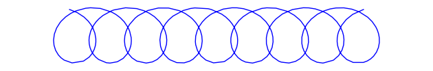
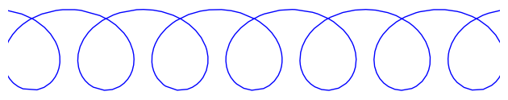
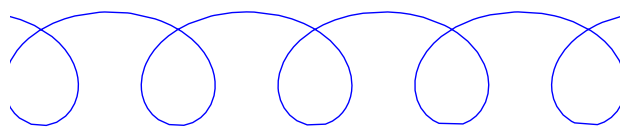
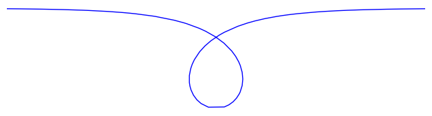
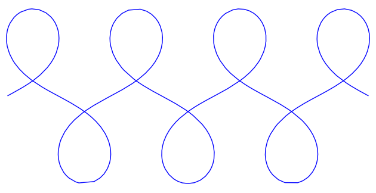
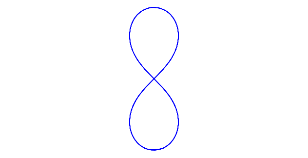
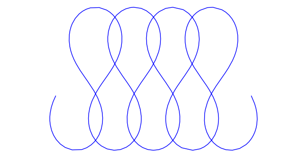
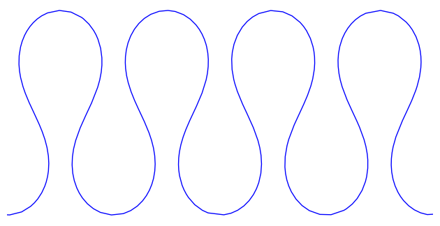
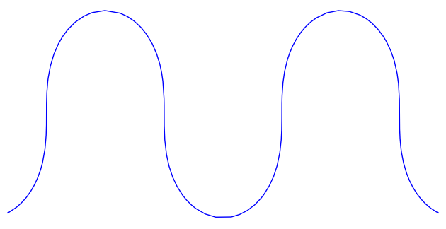
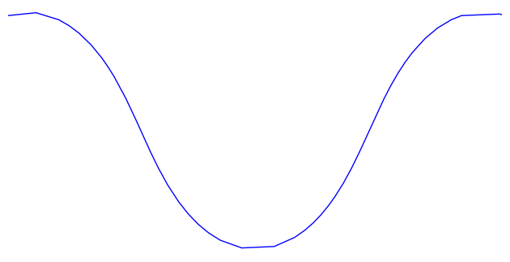
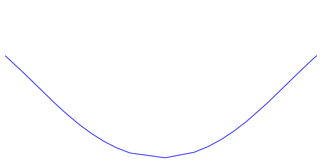
Pretty!
Each of these curves is locally of minimal mean-squared curvature. Globally, they have plenty of curvature, but they're still beautiful.